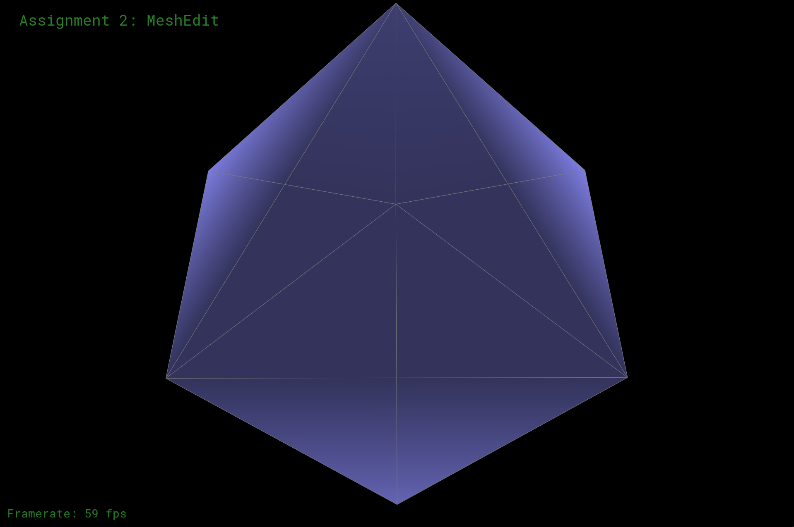
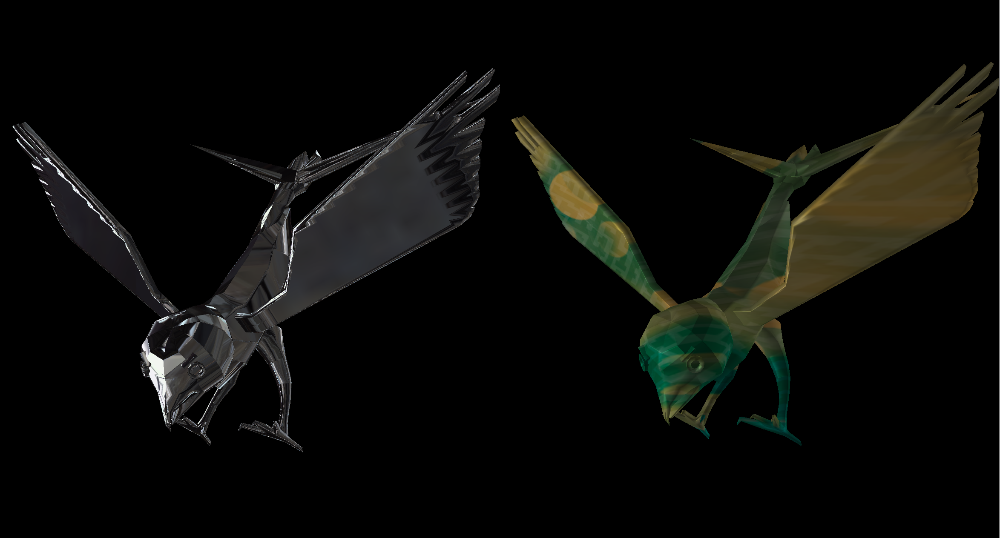

Assignment 2: GeoMenagerie
Owen Jow
See this cow? It was brought to you by
MeshEdit, the triangle mesh viewer (/editor) that CS 184 students implemented over the course of Assignment 2. As one of those students, I'm here to talk about how I've been spending my life recently (i.e. what I worked on in MeshEdit).
Here's a brief overview of the assignment. As I mentioned, MeshEdit is an editor for triangle meshes, which are basically groups of connected triangles that come together and form shapes. (Notice that the surface of the cow above is composed entirely of triangles!) In Assignment 2, we'll work with the halfedge representation of triangle meshes in order to process and improve 3D models. In particular, we'll average vertex normals for smoothing, subdivide the triangles for mesh refinement, and write shaders for cool lighting effects.
Navigation: 1 | 2 | 3 | 4 | 5 | 6 | 7
Part 1: Bézier Patches
A Bézier curve is a smooth curve created through repeated interpolation of control points (where interpolation for each curve position is based on the parameter u). A Bézier patch is a surface created via interpolation of a moving Bézier curve (where interpolation for each point is based on the parameter v).
The aforementioned control points define the curves (and by extension the surface) by collectively indicating an overall shape. Essentially, the points bend ("influence") the surface in a certain way; in theory, this "way" should correspond to a nice cohesive patch. Thus, the final position of each point on the patch is based on linear interpolation between the control points.
Here, we tessellate the surface into an 8x8 grid (by spacing our u/v parameters out in increments of 1/8), and then cut every square in the grid along the diagonal. This has the effect of producing two triangles per square, and 128 triangles overall.
Part 1 actually took me the longest, although in retrospect it really shouldn't have. For some reason I decided to implement matrix multiplication row-by-row and column-by-column instead of using Matrix4x4 objects, and I was extremely stubborn about getting my implementation to succeed. Unfortunately, it never did... and when I finally gave in and switched to Matrix4x4s, everything pretty much immediately worked. Lesson learned!
As suggested by Ben on Piazza, here are screenshots of the teapot from two other angles:
Part 2: Average Normals for Halfedge Meshes
Like supersampling, the idea here is that averaging a vertex's normals tends to smooth out the mesh. In this part, we compute the unit normal at a vertex by averaging the normals of neighboring triangles (specifically by taking the cross product of two edges for each triangle). The brunt of the work here came from using the halfedge data structure to navigate triangle meshes.
For reference, this is how halfedges are set up. Every edge has two halfedges (one on each side, going in each direction). Each halfedge can reference its twin, which is its counterpart on the other side of the edge. A halfedge can also access the next halfedge around the triangle face (following its set direction), along with its source vertex and associated face.
Ultimately, traversing a triangle mesh in Assignment 2's format always comes down to traversing halfedges.
|
A comparison of dae/teapot.dae with and without smoothed normals
|
Part 3: Edge Flip
Edge flipping is an operation best demonstrated visually. Watch the pink edge in the screenshot below:
|
That there pink edge? It's about to be flipped...
|
|
dae/teapot.dae with a single flipped edge
|
With our halfedge setup, edge flipping equates to reassigning lots and lots of pointers. To determine necessary assignments, I went through every halfedge, vertex, edge, and face in the model below and decided – on a case-by-case basis – whether any of an element's pointers needed to be modified. Past that, implementation was pretty straightforward.
|
dae/teapot.dae before the storm
|
|
dae/teapot.dae with a bunch of flipped edges
|
Part 4: Edge Split
Edge splitting is another local remeshing operation. Again, in place of a long-winded explanation let's take a look at an example:
As in the previous part, I sketched out a model and went through individual elements in order to figure out what needed to change. I then proceeded to make a ridiculous amount of assignments in HalfedgeMesh::splitEdge.
To my dismay, faces were disappearing when I initially tried to split. Fortunately, this wasn't too hard to debug; when reading through my code, it turned out I'd copy/pasted a halfEdge1 and forgotten to change it to halfEdge2. As a result, vertexA and vertexD in my program were both pointing to vertex A.
|
dae/teapot.dae with a bunch of flipped and split edges. They call it abstract art
|
Part 5: Upsampling via Loop Subdivision
Loop subdivision is a technique for smoothing meshes; it works by breaking triangles into smaller triangles. After loop subdivision, sharp corners and edges are no longer as sharp or pronounced:
|
dae/cube.dae after one level of subdivision
|
|
dae/cube.dae after three levels of subdivision
|
|
A torus after one level of subdivision
|
The smoothing effect can be reduced by pre-splitting edges, as shown below. When edges around a vertex are pre-split, the vertex post-subdivision is pointier than it would have been otherwise:
|
dae/cube.dae with a bunch of split edges
|
|
The above model after one level of subdivision
|
As noted on the spec,
cube.dae becomes slightly asymmetric after repeated subdivision steps:
This is due to the fact that the original mesh is not symmetric. When that mesh is made to be symmetric via edge splits, the cube actually does subdivide evenly:
|

A symmetric version of dae/cube.dae
|
|
Symmetric subdivision, level one
|
|
Symmetric subdivision, level two
|
|
Symmetric subdivision, level three
|
Bugs
| #1 |
I assigned a "twin" to be the halfedge itself. |
| #2 |
I was flipping sections of original edges. |
| #3 |
[Major!] In edge splitting, I forgot about face pointers for old halfedges. As a result, faces were disappearing when performing loop subdivision. |
| #4 |
I forgot to initialize edges' isNew to be false, so higher levels of loop subdivision errored ("higher" as in anything past one). This is because some edges were still marked as "new" when they weren't supposed to be. |
In various combination, these bugs resulted in the following meshes:
|
The faces were disappearing (see Bug #3)
|
|
I was flipping edges that had already been there (see Bug #2)
|
|
A collage of bugs (not the kind that are in my apartment, though)
|
Part 6: Fun with Shaders
For this part, we implemented a fragment shader in GLSL. This involved two different types of shading: Phong (a combination of ambient, diffuse, and specular shading) and environment map reflection (which required us to calculate the reflection direction in spherical coordinates and then use those values for lookup into an environment map).
|
Utah teapot with Phong shading
|
|
Utah teapot with environment map reflection shading
|
|
envmap shading, again (I couldn't help but take multiple screenshots)
|
Extra
In addition to the above shaders, I implemented 3D texture mapping. For this to work, I computed Phong's
L shading value again and used it to weight colors from a texture map. (To extract colors from the texture, I used GLSL's
texture2D function.) I also had to edit
main.cpp's
loadFile and
MeshEdit::update_camera so that they loaded an extra texture for my fragment shader to use.
Here are some pictures of 3D texture maps applied to the Utah teapot:
Part 7: Design Your Own Mesh!
|
An array of goldbirds (Haliaeetus aurocephalus)
|
These are my goldbirds. (I don't really know why they're called goldbirds, seeing as they're not gold.) Since I was already familiar with Autodesk Maya, I actually modeled this bird in Maya, not Blender, and then exported it as a .dae file.
As expected, the model gets smoother over the course of subdivision:
|
dae/my_mesh.dae after one level of subdivision
|
|
dae/my_mesh.dae after two levels of subdivision
|
|
Multiple levels of subdivision
|
Goldbird Gallery
I couldn't let you go without showing you every screenshot I took, right? Below you can see pictures of goldbirds in various form:

Miscellaneous Images
|
Story of my life (for the last few days)
|
References & Helpful Readings
These resources helped me understand certain concepts throughout the assignment. Also useful (but not listed) were the official course readings, specifically the lecture slides and Fundamentals of Computer Graphics.
Part 1: Bézier Patches
Part 6: Fun with Shaders